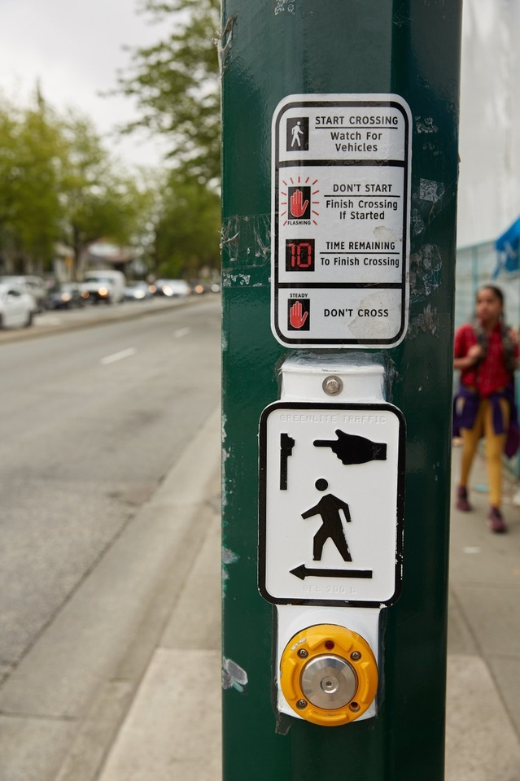

Street Mural

Street murals are a school or community-led initiative, supported by the City, to apply artwork to the street as a traffic-calming measure.
Pictured: Sir Sandford Fleming Elementary.
Pedestrian Decals

Pedestrian decal – Safety tips
Installed above the pedestrian crossing button, this placard reminds users of the correct crossing etiquette. Remember, pedestrians should only ever enter an intersection when the white crossing silhouette is illuminated.